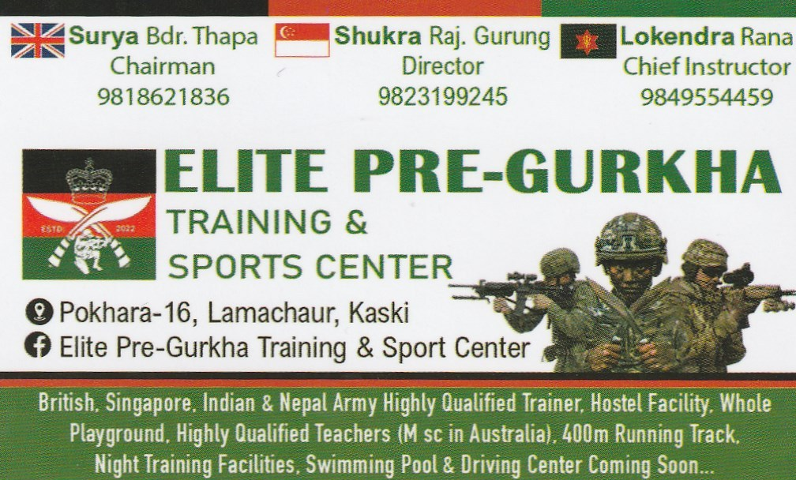

Choose Your Path
Different goals. Same discipline. Choose the path that defines your future.
About Me
I'm a teacher at heart and a problem solver by nature. In the afternoons, I focus on helping students tackle math and English challenges, building their confidence along the way. Outside the classroom, I enjoy exploring new ideas, working on tech projects, and finding creative ways to approach problems.
My passion is mentoring aspiring Gurkhas, guiding them through challenges, and helping them unlock their full potential. I aim to make learning practical, inspiring, and engaging—because growth happens when curiosity meets guidance.
Key Points / Highlights
- Teacher & mentor, focused on confidence-building
- Afternoon classes: Math & English
- Exploring ideas & creative problem-solving beyond the classroom
- Tech enthusiast
- Mentorship for aspiring Gurkhas
- Turning challenges into growth opportunities
- Practical, inspiring, approachable guidance
Math
Math is not about difficult calculations. It is about thinking clearly, working accurately, and staying calm under pressure. In selection for the Brigade of Gurkhas and GCSPF, math tests your ability to follow instructions, manage time, and avoid careless mistakes.
Why Math Is Important
- Tests accuracy and attention to detail
- Builds speed and confidence under time pressure
- Improves logical thinking and problem-solving
- Helps you handle stress during written tests
- Prepares you for real-life calculations and decisions
What You Must Know at This Stage
| Common Topics for Brigade of Gurkhas & GCSPF | |
|---|---|
| 1 | Identifying even, odd, prime & composite numbers |
| 2 | Playing with whole numbers & decimals: Rounding off |
| 3 | Basic operations: Addition, Subtraction, Multiplying & Division |
| 4 | Unitary method: direct variation |
| 5 | Unitary method: indirect (inverse) variation |
| 6 | Work & Time |
| 7 | Ratio |
| 8 | Percenatge and its applications: |
| 9 | Profit & Loss |
| 10 | Compound & Simple Interest |
| 11 | Discount & VAT |
| 12 | Speed, Distance & Time |
| 13 | Stastitics: Mean/Average, Mode, Median & Range |
| 14 | Areas and Volumes |
| Brigade of Gurkhas | |
| A | Scatter plot |
| B | Correlation |
What You Can Expect From Me
- Practice drawn from recent years’ exam-style questions
- Slightly challenging problems to build confidence
- Focus on speed, accuracy, and clear methods
- Step-by-step explanations that are easy to remember
- Regular practice to reduce mistakes under pressure
English
English is not about speaking fancy words. It is about expressing your thoughts clearly, understanding instructions, and responding confidently under pressure. For selection and daily life, clear English helps you avoid mistakes and present yourself better.
What You Must Know In English At This Stage
- Basic tenses (past, present, future)
- Correct use of verbs and subject–verb agreement
- Nouns, pronouns, adjectives, and adverbs
- Articles (a, an, the) and prepositions
- Passage reading and understanding meaning
- Basic vocabulary for daily and interview use
What You Can Expect From Me?
- Practice at the same level as the actual exam
- Slightly challenging questions to boost confidence
- Model questions based on real exam patterns
- Practice drawn from the last 3–4 years of questions
- Clear explanation of common mistakes and traps
- Guidance on structuring answers under time pressure
Core Lessons
These lessons are common for both Brigade of Gurkhas and GCSPF. Start here to build strong basics, then move to the exam-specific question sets.
Academic & Training Associations
My work is professionally associated with the following training institutions, with a focus on structured academic systems and candidate development.
